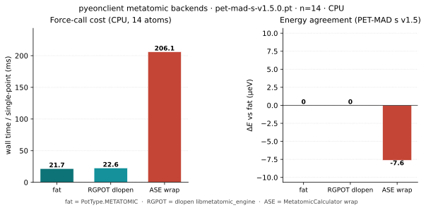

Metatomic backends (fat · RGPOT · ASE)¶
Three supported ways to evaluate the same Metatomic model (for example PET-MAD) from eOn / pyeonclient. All three stay supported.
Path |
How |
Torch linked into host? |
Use when |
|---|---|---|---|
Fat / native |
|
Yes ( |
Default, conda-forge, lowest overhead |
RGPOT / engine |
|
No on thin hosts; torch lives in |
Optional plugin on base wheels |
ASE wrap |
|
Python |
Cookbook / ASE workflows; same energies |
rgpot is not on conda-forge, so the fat native path is the packaging default. The RGPOT engine is the thin-host path. ASE is the Python calculator path.
Benchmark (PET-MAD)¶
Single-point energy and force on a 14-atom PET-MAD geometry
(pet-mad-s-v1.5.0.pt, CPU). Fat and RGPOT-dlopen match to machine precision;
ASE agrees within ~10 µeV. Fat and RGPOT are ~10× faster per call than the ASE
wrap on this workload (the ASE path pays Python / neighbor-list setup each
evaluation).
Numbers and figure are generated at docs build time from the committed
JSON SSoT (../fig/data/metatomic_backend_bench.json). Do not commit the
SVG/PNG; sphinx-build runs scripts/plot_metatomic_backend_bench.py.
{kind=link}

pyeonclient metatomic backends on PET-MAD s v1.5 (CPU, 14 atoms). Left: wall time per force call. Right: energy relative to fat (µeV).¶
Backend |
Energy (eV) |
max |F| (eV/Å) |
ms / call |
|---|---|---|---|
fat ( |
-71.980186 |
37.64625 |
21.7 |
RGPOT dlopen |
-71.980186 |
37.64625 |
22.6 |
ASE wrap |
-71.980194 |
37.64625 |
206.1 |
Treat timings as workload-specific (host CPU, torch build, warm vs cold neighbor lists). The plot is meant to show order-of-magnitude packaging cost, not a universal ranking.
Note
Fat C++ Metatomic and the Python metatomic-torch extension both register
TORCH_LIBRARY(metatomic). Loading both in one process aborts. Compare them
in separate processes (the compare script does this), or use a base
pyeonclient build (no -Dwith_metatomic) when wrapping ASE calculators in
the same interpreter as make_potential_from_ase.
pyeonclient key → factory¶
import pyeonclient as pyec
from pyeonclient.backends import make_backend, list_backends
print(list_backends())
# ['ase', 'ase_metatomic', 'lj', 'metatomic', 'metatomic_dlopen', ...]
# Fat (needs -Dwith_metatomic=true)
pot = make_backend("metatomic", model_path="pet-mad.pt", device="cpu")
# RGPOT + dlopen engine
pot = make_backend(
"rgpot_metatomic",
model_path="pet-mad.pt",
engine_path="libmetatomic_engine.so",
device="cpu",
)
# ASE MetatomicCalculator (PET-MAD-safe load)
pot = make_backend("ase_metatomic", model_path="pet-mad.pt", device="cpu")
# equivalent:
# from pyeonclient.backends import make_metatomic_ase_calculator
# pot = make_backend("ase", calculator=make_metatomic_ase_calculator("pet-mad.pt"))
m = pyec.Matter(pot, pyec.Parameters())
make_backend("ase_metatomic", …) applies a small load compatibility shim for
exported models (including PET-MAD) where upstream
load_atomistic_model re-wraps a scripted AtomisticModel and misses
_model_capabilities_outputs_names. Prefer that helper over raw
MetatomicCalculator(load_atomistic_model(path)) on PET-MAD.
Reproducible bench (pixi)¶
One-shot path from a clean tree (builds fat + ASE-safe pyeonclient, runs the three-way compare, writes the JSON SSoT and regenerates the figure):
# PET-MAD + d016_pos.con live under subprojects/gpr_optim/bench_data/petmad/
# (rsynced from ../gpr_optim when missing). Override with EON_PET_MAD_*.
pixi run -e mta-bench mta-backend-bench
Task |
What it does |
|---|---|
|
meson fat + ASE cores, compare, write JSON + SVG |
|
re-run compare/plot only ( |
|
plot from committed JSON only (no C++ build) |
Build trees: bbdir-mta-bench/ (fat Metatomic + RGPOT engine) and
bbdir-mta-bench-ase/ (pyeonclient without C++ metatomic so ASE
metatomic-torch does not double-register TORCH_LIBRARY(metatomic)).
# optional overrides
export EON_PET_MAD_MODEL=/path/to/pet-mad-s-v1.5.0.pt
export EON_PET_MAD_POS=/path/to/pos.con
export RGPOT_METATOMIC_ENGINE=/path/to/libmetatomic_engine.so
pixi run -e mta-bench mta-backend-bench-skip-build
# figure alone (docs build also regenerates from JSON)
pixi run -e mta-bench mta-backend-plot
# or: sphinx-build docs/source docs/build/html
Driver: scripts/run_metatomic_backend_bench.sh. Compare:
scripts/compare_metatomic_backends.py. Plot:
scripts/plot_metatomic_backend_bench.py.
INI configuration¶
Fat / native¶
[Potential]
potential = Metatomic
[Metatomic]
model_path = /path/to/model.pt
device = cpu
Full Metatomic keys (variants, non-conservative forces, determinism) are in Metatomic Interface.
RGPOT / engine¶
[Potential]
potential = RGPOT
[RgpotPot]
backend = metatomic
engine_path = /path/to/libmetatomic_engine.so
model_path = /path/to/model.pt
device = cpu
Or set RGPOT_METATOMIC_ENGINE / METATOMIC_ENGINE and put the model under
[Metatomic] model_path (also accepted when backend is metatomic).
Build¶
# Fat host: native Metatomic pot + engine for optional RGPOT consumers
meson setup build-mta -Dwith_metatomic=true -Dwith_rgpot=true
meson compile -C build-mta
# -> client/libmetatomic_pot.so (potential = Metatomic)
# -> client/libmetatomic_engine.so (RGPOT backend=metatomic)
# Thin host: RGPOT only; no torch at link time
meson setup build-thin -Dwith_metatomic=false -Dwith_rgpot=true
meson compile -C build-thin
# engine still comes from a fat build or a packager that ships libmetatomic_engine.so
Do not remove native Metatomic from eOn: it is the conda-forge path.
Runtime notes¶
Prefer build-tree pot plugins over any env that also installs
librgpot_pot.so(e.g. cookbook.nox/.../lib). Putting a fat install prefix first onLD_LIBRARY_PATHcan interpose a pre-metatomiclibrgpot_potand yieldunknown backend 'metatomic'.The engine needs torch when dlopened (
LD_LIBRARY_PATH/ rpath of the engine and its metatensor stack). Thin host DT_NEEDED stays free of torch.The engine wraps eOn
MetatomicPotentialthrough the C ABI (rgpot_mta_create/rgpot_mta_force); energies match fatpotential = Metatomicon the same model (verified on PET-MAD; see figure).